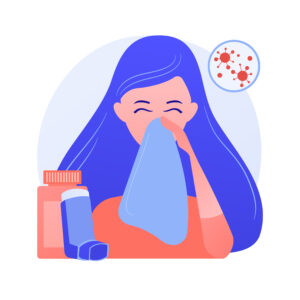

สวัสดีครับผม วราวุธ ไพบูลย์มั่นคง อายุ 20 ปี ผมเป็นโรคประจำตัวอยู่ 2 อย่างตั้งแต่เกิดคือ โรคหอบหืดและภูมิแพ้ โรคประจำตัวเหล่านี้ทำให้ผมใช้ชีวิตในช่วงวัยเด็กได้ลำบากมากๆ เพราะมันเป็นโรคที่ทำให้ทำกิจกรรมหลายๆอย่างไม่ได้ วันนี้ผมเลยจำมากแชร์เรื่องราวสมัยเด็กเกี่ยวกับโรค 2 โรคนี้
การใช้ชีวิตอยู่โดยเป็นโรคประจำตัวทั้งสองอย่างนี้เป็นเรื่องที่ยากลำบากมากๆ ตั้งแต่สมัยเด็กที่จำได้ผมใช้ชีวิตอยู่ในโรงพยาบาลบ่อยมากเพราะโรคหอบหืดจะมีอาการไอ หายใจมีเสียงวี้ด อาจมีอาการอื่นร่วมด้วย เช่น เหนื่อยหอบ แน่นหน้าอก หายใจไม่สะดวก หากเป็นมากอาจทำให้หายใจไม่ออก ไม่สามารถรับออกซิเจนเข้าสู่ร่างกายและไม่สามารถนำคาร์บอนไดออกไซด์ออกจากร่างกายได้ อาการเหล่านี้ถ้าเป็นไม่มากจะหายโดยการพ่นยาที่หมอให้มา แค่ถ้าพ่นยาที่หมอให้มาแล้วอาการไม่หายก็ต้องไปโรงพยาบาลเพื่อทำการพ่นยาแบบฉุกเฉิน สมัยเด็กๆผมมีอาการเหล่านี้บ่อยมากๆเลยต้องเข้าโรงพยาบาลช่วงกลางดึกบ่อยๆ สิ่งที่ทำให้เกิดอาการหอบได้ก็มี การออกกำลังกายเช่น วิ่ง เล่นกีฬาต่างๆ สภาพอากาศที่เย็นและแห้ง การออกกำลังกายไม่ได้ทำให้ร่างกายผมช่วงเด็กอ่อนแอมากๆ แต่นั้นยังไม่ลำบากพอเพราะ ผมเป็นโรคภูมิแพ้ซึ่งเป็นอีกหนึ่งต้นเหตุที่ให้อาการหอบกำเริบเช่น ฝุ่นและไรฝุ่น รังแคสัตว์ เกสรดอกไม้ ควันบุหรี่ ไอระเหยน้ำมัน สารเคมี ก๊าซพิษต่างๆ ขนตุ๊กตาเป็นต้น หรือการติดเชื้อไวรัส แบคทีเรียและเชื้อราในอากาศ แค่นั้นยังไม่พอเพราะสิ่งที่ผมแพ้ก็มี นมวัว ฝุ่น หญ้าต้นเล็ก แมลงสาบตัวเล็ก เมื่อผมสัมผัสหรือกินเข้าไปจำทำให้เกิดผื่นแพ้ขึ้นที่ข้อศอกและบริเวณหลังเลยทำให้ผมกินนมวัวไม่ได้ แต่เมื่อเวลาผ่านไปจนผมโตขึ้นผมการสามารถวิ่งและออกกำลังกายได้มากขึ้นเพราะงั้นใครที่เป็นโรคหอบหืดและภูมิแพ้ก็อย่ายอมแพ้เหมือนชื่อโรค
ผมเชื่อว่าไม่ว่าคุณจะเป็นโรคประจำตัวใดๆ คุณก็ต้องใช้ชีวิตกับโรคนั้นไปตลอดชีวิตมันจะไม่หายไปแต่อาการจะเบาลงได้ถ้าทำตามที่หมอแนะนำ หวังว่าบทความนี้จะช่วยให้ทุกคนได้รู้จักผมมากขึ้น และเห็นภาพรวมของชีวิตและประสบการณ์เกี่ยวกับโรคที่ผมได้เจอมา ขอบคุณที่ให้ความสนใจและติดตามอ่านครับ